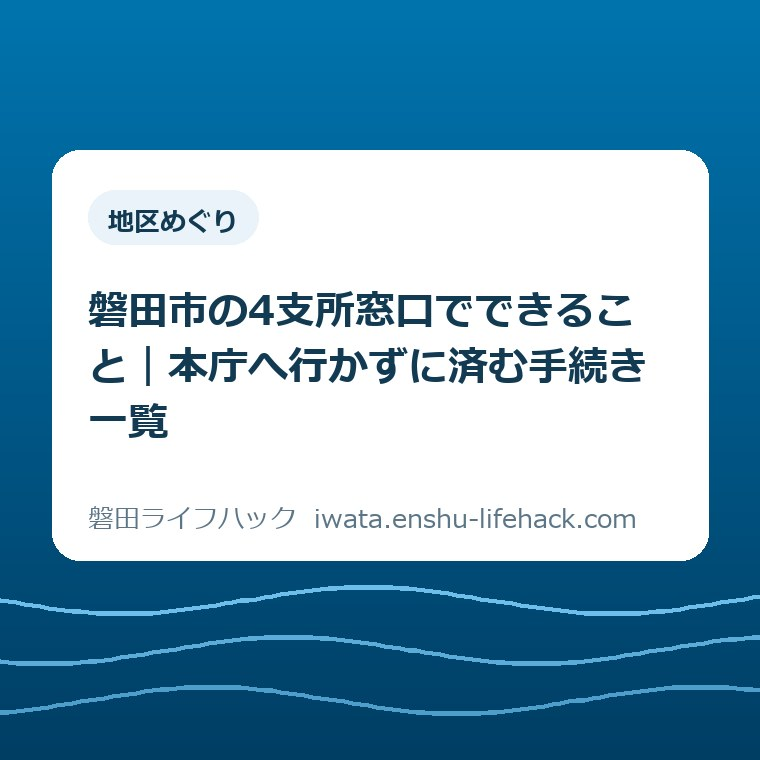

地区めぐり
磐田市の4支所窓口でできること｜本庁へ行かずに済む手続き一覧

この記事の要点
Q. 住民票や税証明を取りたいけれど、わざわざ本庁まで行かなければならないのか？
A. 住民票や印鑑証明、税証明や国保などの日常的な手続きは、福田・竜洋・豊田・豊岡の4支所窓口で本庁と同じように交付・申請可能です。移動時間と待ち時間を減らすため、身近な支所を優先して活用しましょう。
導入——市役所本庁へ行く前に、身近な支所を確かめる
磐田市で暮らしていると、住民票の写しや印鑑登録証明書、固定資産の評価証明書など、公的な証明書が必要になる場面が定期的に訪れます。引っ越し、家族の就職や進学、住宅ローンの借り換え、あるいは実家の相続や登記変更など、節目ごとに書類の提出を求められるからです。
そうしたとき、多くの方が無意識に国府台にある磐田市役所本庁舎を目指して車を走らせがちです。しかし、磐田市は南北に約27キロメートル、東西に約11.5キロメートルと広い面積を持ちます。南部の福田や竜洋、あるいは北部の豊岡地区から本庁舎へ向かうと、片道だけで車で20分から30分以上かかることも珍しくありません。往復の移動と駐車場の混雑を合わせれば、半日がかりの用事になってしまいます。
実は磐田市には、平成の大合併前の旧町・旧村役場の機能を引き継いだ「福田支所」「竜洋支所」「豊田支所」「豊岡支所」の4つの支所が設置されています。これらの支所には市民窓口が常設されており、日常生活で必要となる証明書交付や各種届出の大部分が、本庁と同じようにその場で手続き可能です。
この記事で整理したいのは、単に支所の場所や電話番号を並べることではありません。不動産実務や地域の暮らしの相談を受ける立場から、「どの手続きなら支所で完結するのか」「逆に本庁でしか扱えない窓口業務は何なのか」「支所ごとにどんな違いや注意点があるのか」という実務上の判断基準を明確にすることです。
最初の問いは「住民票や税証明を取りたいけれど、わざわざ本庁まで行かなければならないのか」です。結論から言えば、一般的な個人の証明書発行や日常の福祉・保険の手続きであれば、本庁へ行く必要はほとんどありません。最寄りの支所を利用するほうが移動時間も短く、窓口の混雑も比較的穏やかで、はるかに効率的です。
ただし、都市計画の確認や建築基準法の相談、開発許可、専門的な税務の異議申し立てなど、本庁の専門部署でしか判断できない業務も存在します。手戻りを防ぐためには、出発前に「支所で完結するかどうか」を30秒で切り分ける視点が欠かせません。公表資料と実務の経験をもとに、支所窓口の賢い使い方を順を追って確認していきましょう。

まず、公式資料から事実を整理する
磐田市が公表している組織案内および庁舎案内の資料（組織機構および各支所の業務一覧）によると、市内の4支所（福田支所・竜洋支所・豊田支所・豊岡支所）には、市民生活に直結する3つの主要な業務分野が配置されています。具体的には「地域振興関係」「市民関係」「福祉関係」の3分野です。
第一の市民関係業務では、戸籍謄本・抄本、住民票の写し、印鑑登録および印鑑登録証明書、さらには住民税の課税・非課税証明書や所得証明書、固定資産評価証明書といった市税に関する各種諸証明の交付が行われています。窓口での市税や国民健康保険料の収納（納付）も受け付けています。
第二の福祉・医療関係業務では、国民健康保険や後期高齢者医療制度、国民年金の諸届のほか、重度心身障害者やひとり親家庭、こども医療費の助成申請、障害者福祉や高齢者福祉、介護保険に関する一部の受付や相談が対応範囲とされています。
第三の地域振興関係業務では、地域の自治会活動や交通安全、防犯、地域防災の窓口業務に加え、し尿処理の受付、犬の登録手続き、生ごみ自家処理容器の設置補助金申請、公用福祉車両の貸出受付などが所管されています。
一方で、公式資料を注意深く読み解くと、支所間における微妙な業務の違いや除外事項も明記されています。例えば、野生鳥獣被害防止対策事業費補助の受付について竜洋支所は対象外とされている点や、住民票や戸籍の複雑な異動届出において一部取り扱いが異なるケースがあります。
また、本庁舎にのみ設置されている専門部署——例えば都市計画課、建築住宅課、資産税課の評価実務係、生活環境課の専門指導係など——が扱う許認可申請や個別相談については、支所窓口では書類の預かりのみとなるか、あるいは本庁へ案内される仕組みになっています。
窓口の受付時間は、本庁および全支所共通で平日（月曜日から金曜日）の午前8時30分から午後5時15分までです。祝日および年末年始（12月29日から1月3日）は休館となります。また、本庁では一部の曜日に木曜時間外窓口などの延長対応を行っている場合がありますが、支所窓口は原則として平日の通常時間帯のみの運用となっている点も公式情報として確認しておく必要があります。
磐田の暮らしに置き換える
公式資料に書かれた業務範囲を、磐田で暮らす生活者の視線に引き直してみましょう。南北に広がる磐田市において、支所を上手に使いこなすことは、生活の時間効率を劇的に改善する有効な知恵となります。
例えば、福田地区（旧福田町）にお住まいの方が本庁へ行く場合、国道150号方面から県道413号（旧国道1号）や市役所通りを経由し、約8キロから9キロの道のりを車で走行します。朝夕の通勤時間帯や日中の混雑時には、片道25分から30分を要します。一方、福田支所（福田400）であれば地区内の中央部に位置し、数分から10分程度で到着できます。
竜洋地区（旧竜洋町）も同様です。天竜川の河口近く、掛塚や岡地区からは、本庁まで10キロ近く離れています。竜洋支所（岡729-1）の窓口を利用すれば、移動時間を半分以下に短縮できます。竜洋図書館や竜洋体育センターなど、地域の主要施設が近接しているため、ついで立ち寄りがしやすい立地です。
北部の豊岡地区（旧豊岡村）はさらに距離の差が顕著です。下神増にある豊岡支所（下神増98）周辺から本庁舎までは約15キロ、車で順調に走っても35分から40分ほどかかります。天竜浜名湖線沿線や敷地・野部方面から見れば、日常の証明書取得のために本庁へ往復するのは半日がかりの重労働です。豊岡支所が存在することの価値は極めて大きいと言えます。
西部の豊田地区（旧豊田町）にある豊田支所（森岡380-1）は、JR豊田町駅の北側に位置し、アミューズ豊田や市立図書館（豊田図書館）などの公共施設が集積するエリアにあります。本庁との距離は比較的近いものの、JR東海道線の南北移動や周辺住民にとっては、駅近の身近な窓口として高い利便性を発揮しています。
不動産売買や相続の手続きを控えている方にとって、支所で取得できる書類は極めて多岐にわたります。契約当事者の住民票の写し、印鑑登録証明書、土地・建物の固定資産評価証明書や公租公課証明書、名寄帳の写しなどは、いずれの支所でもその場で交付を受けられます。窓口の待ち時間も本庁に比べて格段に短いことが多く、実務上大変助かる選択肢です。
ただし、不動産の売却や建築計画に伴って「都市計画法上の用途地域を確認したい」「市道との境界確定図を閲覧したい」「農地転用の許可見込みを農業委員会で聞きたい」といった相談がある場合は、支所では対応できず本庁の各課へ赴く必要があります。証明書取りは支所、許認可や専門相談は本庁、という役割分担を頭の中で整理しておくことが肝要です。

評価——良い点と、注文したい点
行政窓口の配置と支所の機能について、市民の生活実感と実務の両面から評価してみましょう。まずは良い点です。
良い点は、市役所本庁から遠く離れた旧町村エリアの拠点に、市民生活に不可欠な諸証明交付や福祉・保険の総合窓口がしっかりと維持されている点です。合併から年月が経過しても、身近な地域で対面の手続きができる拠点が南北・東西にバランスよく残されていることは、高齢者や子育て世帯にとって心強い安心材料となっています。
また、支所窓口は本庁舎の市民課に比べて来庁者の数が分散されており、待ち時間が圧倒的に短い傾向にあります。駐車場も庁舎のすぐ目の前に平置きで確保されていることが多く、車を停めてから書類を受け取って退出するまでが極めてスムーズであることも、見逃せない大きな利点です。
一方、利用者の立場から見た注文したい点も存在します。
注文したい点は、支所で「できること」と「できないこと」の境界線が、市の広報やウェブサイト上でやや分かりにくく、初めて利用する市民が迷いやすい点です。例えば、同じ福祉関係の相談でも、一般的な手当の受給申請は支所で受付可能ですが、より専門的なケースワークや判定を要する相談は本庁への連絡を案内されることがあります。
また、窓口の取扱時間において、本庁で実施されているような夜間や休日の時間外開庁が支所では行われていない点も挙げられます。平日日中に仕事がある給与生活者にとっては、支所窓口が開いている時間に訪れることが難しく、結果としてコンビニ交付サービスやマイナンバーカードを活用したオンライン申請に頼らざるを得ないのが現状です。
さらに、4支所の間で取り扱い業務にわずかな差異（特定の届出や補助金の受付除外など）があるため、市民が「どの支所でも全く同じ手続きができる」と思い込んで足を運ぶと、思わぬ二度手間が生じるリスクをはらんでいます。
対案・結論——三段階で確認する
これらの利点と注意点を踏まえた上で、市民が最も無駄なく行政手続きを完了させるための対案・結論として、手続きを「三段階で確認する」実践的なアプローチを提案します。
第一段階は、「コンビニ交付やオンライン手続きで完結するか」の判定です。マイナンバーカードをお持ちであれば、住民票の写しや印鑑登録証明書、最新年度の所得・課税証明書などは、市内のコンビニエンスストアに設置されたマルチコピー機で早朝から深夜まで取得できます。手数料も窓口より割安に設定されていることが多いため、まずこの手段を検討するのが最善です。
第二段階は、「窓口での証明書発行や一般的な諸届か」の判定です。過去年度の税証明、除票、戸籍の附票、国民健康保険証の差し替え、子どもの医療費受給者証の再交付、生ごみ処理容器の補助申請などは、最寄りの4支所の市民窓口へ向かいます。本庁まで遠出する必要はなく、空いている支所窓口を活用することで時間を大幅に節約できます。
第三段階は、「専門的な審査・協議・相談を伴う業務か」の判定です。建築確認、土地利用計画、開発審査、農地法手続き、市道路線の境界明示、生活困窮の専門相談などは、迷わず最初から本庁舎の担当部署に電話で事前予約を入れてから向かいます。支所を経由すると書類の回送に日数がかかり、かえって時間が延びてしまうからです。
このように、手続きの性質に応じて「デジタル」「身近な支所」「本庁の専門窓口」を使い分けることが、広大な磐田市で最も賢く暮らすための生活防衛術となります。
確認する順番
実際に書類取得や手続きのために出かける前に、以下のステップで持ち物と行き先を確認してください。事前準備を怠ると、窓口で書類が足りずに後日出直しとなる原因になります。
- 必要な書類の種類と枚数を洗い出す（本人分だけでなく同一世帯員や代理人分が必要か確認する）。
- マイナンバーカードと暗証番号を用意し、コンビニ交付の対象書類であるかを確認する。
- コンビニ対象外の場合、最寄りの支所（福田・竜洋・豊田・豊岡）で取扱可能な業務か市サイトで確認する。
- 運転免許証やマイナンバーカード等の本人確認書類、印鑑、手数料（現金または対応決済）を鞄に入れる。
- 代理人が申請する場合は、委任状や戸籍謄本など代理権を証明する書面が揃っているか再点検する。
家族で共有するための記録
行政手続きは、世帯主一人だけの問題ではなく、家族全員の生活スケジュールに関わります。特に子育て世帯や高齢の親と同居している家庭では、誰がどの窓口へ行き、どの書類を受け取ってくるかをあらかじめ共有しておくことが円滑な手続きの鍵です。
例えば、高校や大学への進学準備期には、奨学金や授業料減免の申請のために「世帯全員の住民票」や「非課税証明書・所得証明書」の提出を短期間で求められます。親が仕事で動けない場合、成人に達した子ども本人が支所窓口へ行くケースもあります。
その際、窓口で「世帯主の委任状が必要か」「顔写真付きの身分証明書は何を持参すべきか」を事前に家族内で確認しておかないと、窓口で受け取れず締め切り直前に焦ることになります。支所は本庁に比べて受付がスムーズですが、法的要件としての本人確認や委任状の要否は本庁と全く同じ厳格さで審査されます。
また、高齢の親の介護保険申請や後期高齢者医療の減額認定手続きなどを代行する場合も同様です。どの支所が実家に一番近く、駐車場から窓口までの歩行距離が短いかといった物理的な環境も含めて、家族間で情報を共有しておくと無駄な負担を減らせます。
大石の視点
宅地建物取引士として不動産実務に携わる現場では、物件の調査や契約準備のために、磐田市役所本庁舎と各支所を頻繁に訪れます。その中で日々実感するのは、「支所という拠点の持つアクセスの軽さ」です。
不動産の権利移転や相続登記の現場では、古い名寄帳や評価証明書、除票など、窓口で職員の方と対話しながら探さなければならない書類が多々あります。本庁の資産税課や市民課は常に多くの来庁者で混み合っており、受付から交付まで30分以上待つことも珍しくありません。
これに対して、竜洋支所や福田支所、豊岡支所の窓口は、来庁者の動線が短く、窓口の担当者と落ち着いて必要書類を確認できる安心感があります。私自身、福田や竜洋方面の物件を調査する際は、あえて本庁ではなく現地の支所に立ち寄り、評価証明書や公図の閲覧、地域情報のヒアリングを一息に済ませることが日常的なルーティンになっています。
磐田市のような広大な自治体において、支所は単なる「小さな出張所」ではありません。合併前の歴史や地域の地勢、暮らしの重心を今に伝える貴重な生活インフラです。日常生活の用事であれば、わざわざ渋滞や遠路を押して本庁へ通う必要はありません。最寄りの支所を「自分のまちの市役所」として気兼ねなく使い倒すことこそ、磐田暮らしを快適にする実践的な知恵だと確信しています。
まとめ
磐田市役所本庁と福田・竜洋・豊田・豊岡の4支所は、それぞれ異なる役割と特徴を持っています。広大な磐田市で快適に暮らすためには、手続きの性質に合わせて目的地を選ぶ賢明さが求められます。
住民票や印鑑証明、税証明などの日常書類は、まずコンビニ交付を検討し、窓口が必要であれば迷わず最寄りの支所を活用してください。移動時間と待ち時間を大幅に削減でき、一日を有効に使えます。
一方で、建築や開発、専門的な許認可相談などは最初から本庁の担当課を目指すことで、手戻りのない確実な手続きが可能になります。身近な支所の機能を理解し、上手に生活に取り入れていきましょう。
- 住民票・印鑑証明・税証明・国保・年金・一般福祉は、本庁へ行かず4支所（福田・竜洋・豊田・豊岡）で完結する。
- 支所窓口は本庁に比べて移動時間・待ち時間が短く、平置き駐車場が近いため手続きが極めてスムーズ。
- 建築確認・都市計画・開発許可・農地転用などの専門的な許認可相談は、最初から本庁の担当部署を訪れる。
参考にした公式情報
- 支所の業務・連絡先／磐田市（2026年9月11日確認）
- 庁舎案内／磐田市（2026年9月11日確認）
- 福田支所／磐田市（2026年9月11日確認）
最終確認日：2026-09-11 ／ 本記事は公表情報と執筆者の見解を分けて記載しています。制度・数値・公開状況は変更される場合があるため、最新情報は磐田市公式ページでご確認ください。